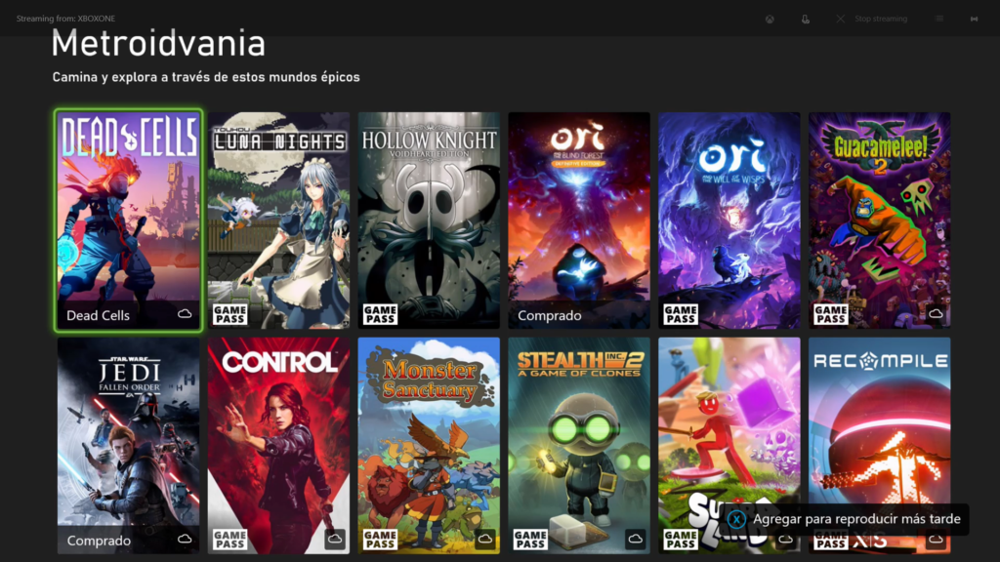

Alumno:AXCEL ALEJANDRO CRUZ VIDAL

Me gustan mucho los videojuegos tipo metroidvania porque permiten explorar mapas grandes, descubrir secretos y mejorar habilidades poco a poco. También disfruto explorar diferentes géneros de música, desde electrónica hasta rock y estilos más intensos.
Los metroidvania me gustan porque combinan exploración, dificultad y progreso constante. En cuanto a la música, me gusta descubrir nuevos sonidos porque cada género transmite emociones diferentes y me ayuda a concentrarme o motivarme.